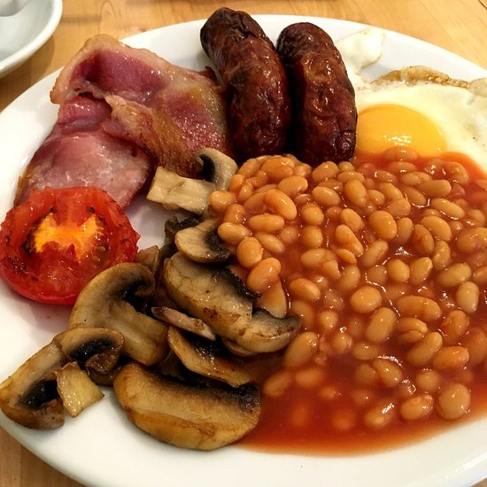

English Breakfest

Ingredients:
- 4 sausages (Cumberland, pork, or your favorite)
-
4 rashers of bacon (preferably back bacon or streaky if you prefer
crispy)
- 2 large eggs
- 4 medium tomatoes (halved)
- 200g mushrooms (sliced)
-
200g baked beans (one small can, ideally British-style beans in tomato
sauce)
- 4 slices of bread (for toast)
- Butter (for toast and frying)
- Salt and pepper (to taste)
Instructions:
1. Prepare the sausages:
- Heat a large frying pan over medium heat.
-
Add a small amount of oil or butter, then cook the sausages for about
10-12 minutes, turning frequently until browned and cooked through.
- Once done, set aside and keep warm.
2. Cook the bacon:
-
In the same pan, cook the bacon to your desired crispiness. This should
take 3-4 minutes on each side for back bacon, or longer if you like it
crispy.
- Set the bacon aside and keep warm.
3. Cook the mushrooms:
- Add a little butter to the pan, followed by the sliced mushrooms.
- Sauté for 5-7 minutes until they are golden and softened.
-
Season with a little salt and pepper, then remove from the pan and keep
warm.
4. Cook the tomatoes:
- In the same pan, place the halved tomatoes cut side down.
-
Cook for 3-4 minutes until they begin to soften and caramelize.
Optionally, flip them over to lightly cook the skin side.
- Remove and set aside.
5. Heat the baked beans:
-
Warm the baked beans in a small pot over medium-low heat, stirring
occasionally until hot.
6. Fry the eggs:
- In a separate non-stick pan, heat a little butter or oil.
-
Crack the eggs into the pan and fry them sunny-side up, or flip them if
you prefer them over-easy. Cook until the whites are set but the yolks
are still runny (or to your preferred doneness).
7. Assembly:
-
Place the sausages, bacon, mushrooms, tomatoes, and baked beans onto the
plate.
- Add your fried eggs on top or to the side.
-
Serve with buttered toast and a cup of tea or coffee for a full English
breakfast experience!
Enjoy!